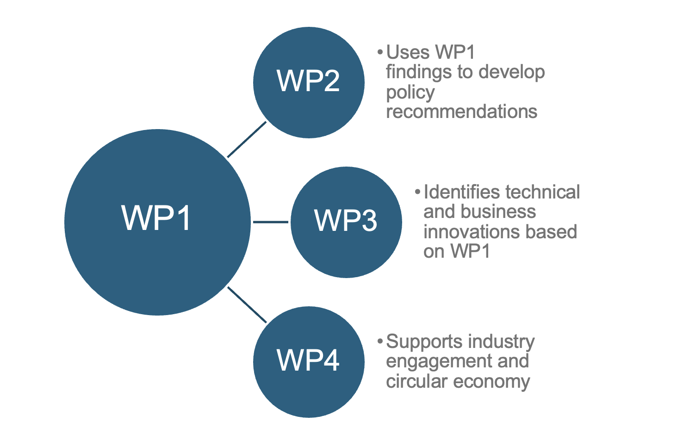
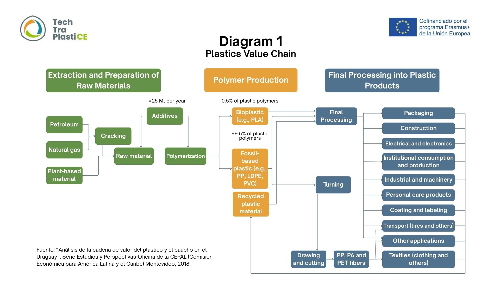
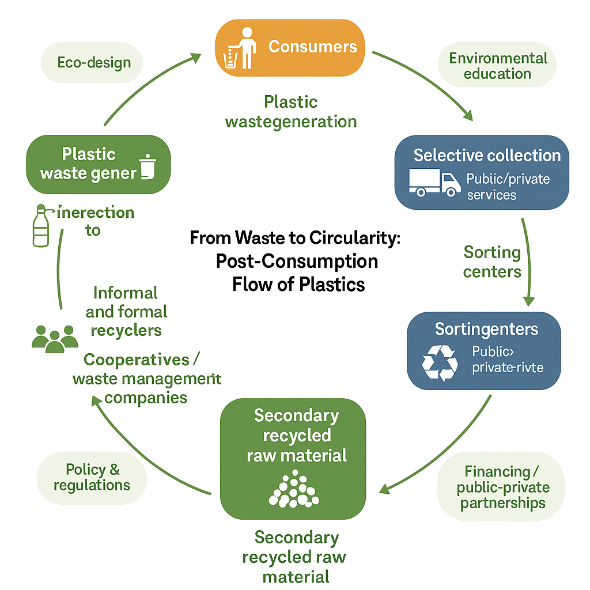
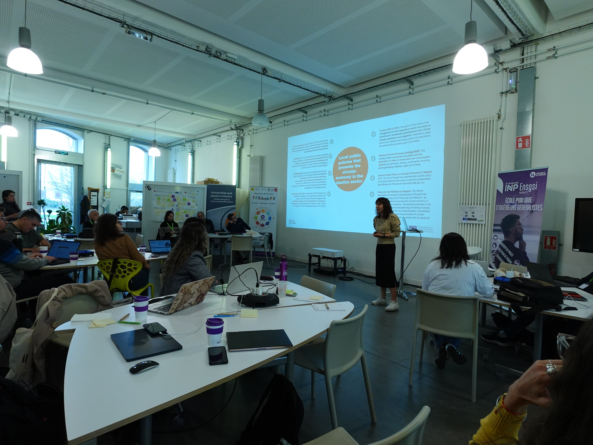
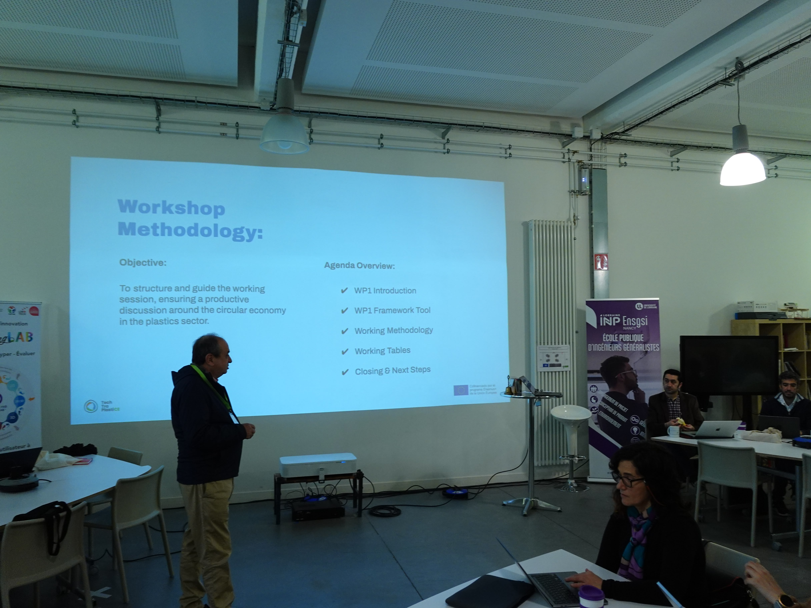
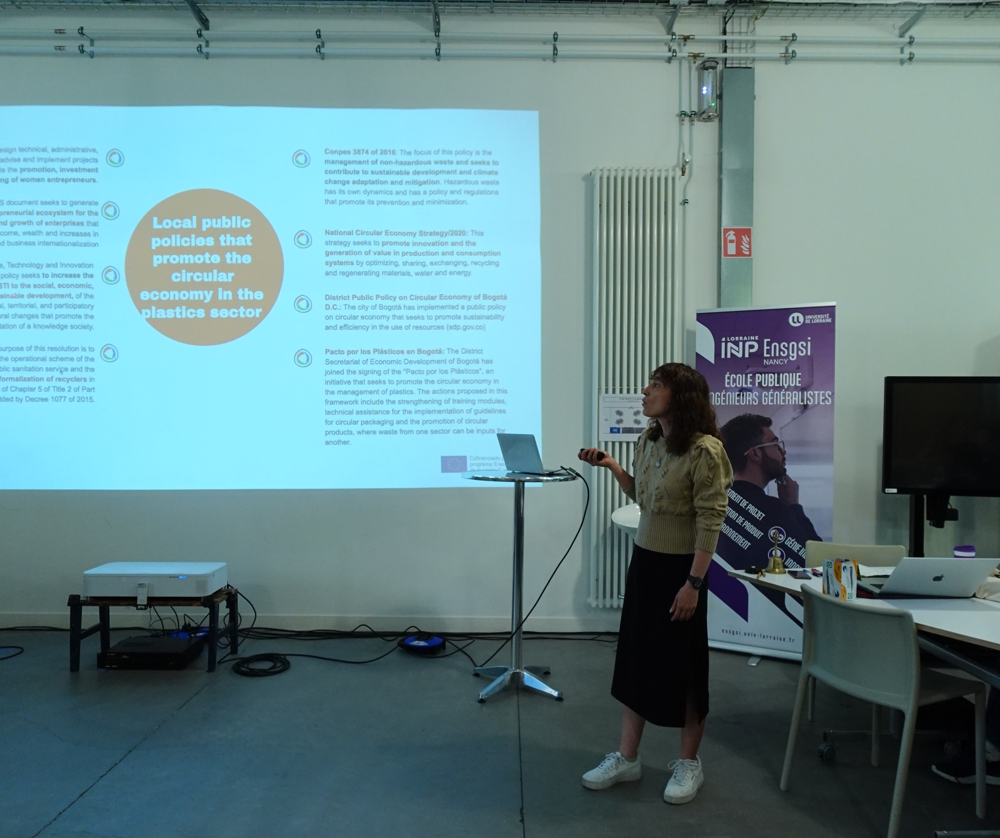
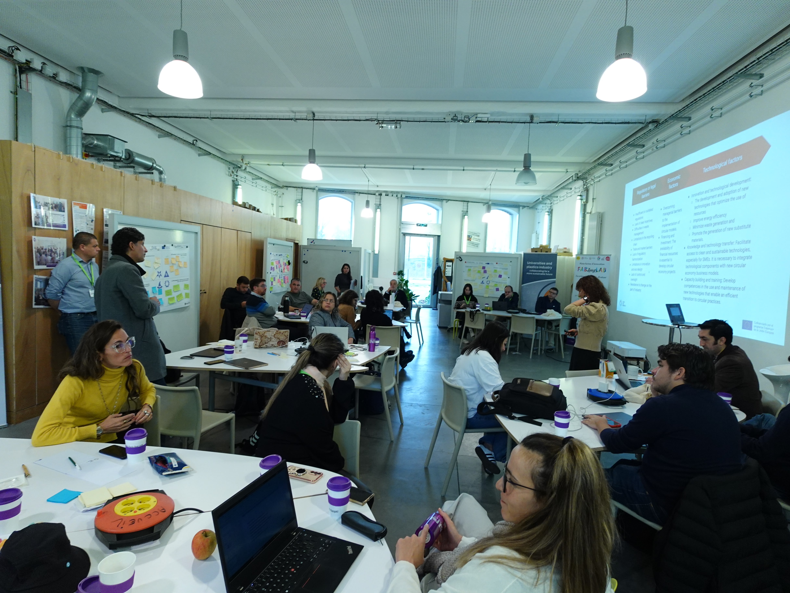

| Dimension | Argentina | Chile | Colombia |
|---|---|---|---|
| Plastic Regulatory Framework | It has general and sectoral environmental laws but lacks an integrated, plastic-specific regulatory framework at the national level. As a federal country, environmental regulation often falls under provincial jurisdiction, resulting in a patchwork of approaches and uneven implementation across regions. | Has a robust and specific legal framework regulating different stages of the plastic life cycle, including Extended Producer Responsibility (EPR) and single-use plastics. | It shows advances in specific laws on single-use plastics and EPR. However, the framework is still being developed and progressively regulated. |
| Circular Economy Public Policies | Some initiatives have been launched, but many are fragmented or discontinued. The lack of coordination across jurisdictions limits their long-term impact. Circular economy is referenced in laws and resolutions, but not yet integrated as a core policy framework; efforts vary by province. | Long-term strategies exist with measurable targets and clear guidelines. There is strong articulation among ministries and public actors. Circular economy is institutionalized with cross-cutting strategies like the 2040 Roadmap. | Active national circular economy strategy (2019) complemented by city-level efforts like Bogotá’s circular policy (2023) and sectoral plans. Circular economy is integrated across government levels and sectors, with special emphasis on inclusion, formalization of recyclers, and value chain innovation. |
| Participation in International Agreements | Recognizes and signs international agreements but are not always translated into concrete or binding national actions. | Active participant in multilateral environmental agreements; uses these as leverage for national policy development. | Strong engagement in international environmental agreements, some of which form the basis for new local policies and frameworks. |
| Implementation and Coordination | Policy implementation is uneven, with local initiatives often disconnected from national agendas; limited fiscal incentives and regulatory alignment. | Strong legal base, but implementation gaps remain due to limited infrastructure in some regions and challenges in local enforcement. | Progress has been made in legislation and planning, but challenges persist in financing, local capacity building, and institutional strengthening. |
Framework to understand barriers and benefits to apply with local legislation
Executive summary
This document presents the first deliverable of Work Package 1 (WP1) of the TechTraPlastiCE project: a comparative framework to understand the barriers and benefits associated with the application of local legislation in the plastics sector in Argentina, Chile, and Colombia. The main objective of this deliverable is to provide a shared baseline seeking to better understand the transition toward a circular economy by identifying regulatory structures, institutional gaps, and key stakeholders across the plastic value chain among the three countries.
The methodology was designed on the basis of a common understanding of consortium. It consisted in four major steps: 1) identification of the legislation in terms of circular economy public policies on plastics for each country, 2) organization and analysis of secondary data to identify barriers and leviers that stakeholders of the plastic value chain will be confronted , and 3) socialization workshop during the kick-off meeting in order to confront the particular results in order to find major patterns among the countries. This collaborative process enabled preliminary findings of common barriers and leviers and validated. Finally, 4) each institution subsequently submitted a national report, which was reviewed and synthesized in this comparative framework.
The findings highlight that while the three countries have made progress in enacting regulations targeting single-use plastics, improving recycling, and promoting circular strategies, there remain important challenges to tackle. These include for instance 1) uneven implementation across territories, 2) insufficient incentives for circular innovation, and limited coordination between public and private actors, 3) regulatory frameworks are at different stages of maturity, having for example the Chile a consolidated structure, while Colombia context is undergoing a rapid development, and Argentina presented strong localized initiatives but lacking national cohesion.
The analysis of the plastic value chain, presented in general terms in this report, reveals similarities in structure, with key differences in resin production capacity and the integration of waste pickers. Argentina and Colombia produce plastic resins domestically, while Chile relies on imports. In all three countries, municipalities lead waste management services, but coverage and infrastructure gaps persist, particularly in rural areas. The formalization of recyclers is more advanced in Colombia, while in Argentina and Chile, cooperatives operate with variable levels of recognition and support. A more detailed assessment of the value chain and actor dynamics will be carried out in upcoming WP1 deliverables.
The conclusions of this framework emphasize the need for improved regulatory coherence, investment in waste valorization systems, and strengthened collaboration between actors. Higher education institutions play a key role in this transition by fostering applied research, policy dialogue, and the co-creation of training and innovation initiatives. This deliverable will serve as a baseline for the development of targeted tools and actions in the following work packages.
Introduction
Purpose of this framework
The TechTraPlastiCE project aims to strengthen the capacities of higher education institutions in Latin America and Europe to support the transition toward a circular economy in the plastic value chain. Its purpose is to foster innovation, technology transfer, and collaboration between universities, businesses, and other key stakeholders, contributing to closing circular gaps in local ecosystems.
In this context, the present deliverable, “Framework to understand barriers and benefits to apply with local legislation”, seeks to identify existing regulatory frameworks in the participating countries and to understand the factors that enable or hinder their effective implementation. This framework will help to recognize the benefits and barriers that companies face when applying local legislation related to plastic management and the circular economy, providing a shared foundation to guide future project activities such as tool development, technical training, and pilot implementation.
This document presents the findings concisely and is structured to ensure accessibility for a broad audience. The annexes include detailed national and regulatory information.
This framework and the upcoming results from WP1 will support the other work packages by providing a common understanding of regulatory environments, barriers, and opportunities for circular economy adoption in the plastics sector, as illustrated in Figure 1. It supports the identification of policy gaps, opportunities for collaboration with industry and government, and country-specific conditions that will inform future work packages. Moreover, it is a baseline for developing targeted policy recommendations, innovation pilots, and capacity-building actions.

Plastics, Circular economy and value chain context
Plastics are deeply embedded in global economic activity due to their low cost, durability, and wide range of applications. Global plastic production reached approximately 460 million tons in 2019, having doubled since 2000. The global plastic market was valued at €535 billion in 2019 and is projected to grow at a rate of 3.2% annually, potentially tripling by 2060, according to the OECD.
In line with this diagnosis, the United Nations Environment Program report (UNEP, 2018) identifies Latin America and the Caribbean as one of the regions with the highest losses of macroplastics to the environment, with approximately 0.89 million tons per year coming mainly from poorly managed solid waste. It is estimated that around 31% of plastic waste in the region does not receive adequate treatment, which increases its environmental impact, especially in marine environments. Despite representing only 4% of global plastics production, regional consumption reaches 8%, reflecting growing pressure on local management systems.
The study also points out that the polymers most frequently found as microplastics in marine ecosystems include Polypropylene (PP), High-density polyethylene (HDPE), Low-density polyethylene (LDPE) and Polyethylene terephthalate (PET), whose sources range from the wear and tear of consumer products and washing of synthetic textiles, to the degradation of macroplastics. In this sense, the strengthening of circular economy strategies in the region should consider interventions along the entire plastic value chain, promoting policies that prevent losses at the use and final disposal stage, as well as solutions for priority sectors such as packaging, fishing, and construction.
Awareness and actions around plastic pollution have intensified in Latin America and the Caribbean (LAC) in recent years, positioning the region as a growing force in the global transition toward circular plastics management. Today, 27 of the 33 countries in the region have enacted national or local legislation to reduce, restrict, or ban single-use plastics. However, recycling and recovery rates remains below 10%, while plastics continue to represent 10–12% of municipal solid waste in many countries. Houssini and Tan (2025), reported that incineration is the prominent waste disposal method (34%), while landfill is decreasing substantially (40%), and global recycling remained stagnant (9%).
In line with these challenges, the Cities Network on Plastic Circular Economy in Latin America and the Caribbean was launched in March 2025, as part of the Global Environment Facility (GEF) project to Reduce Marine Plastics and Plastic Pollution in Cities, under a circular economy approach. This network, promoted by UN Environment Programme (UNEP) and the Cartagena Convention, brings together cities such as Barranquilla, Cartagena, Kingston, Montego Bay, Panama City and Colon, with the aim of sharing experiences, articulating good practices and promoting replicable local solutions to address plastic pollution. This initiative marks a concrete step forward in the implementation of circular strategies at the municipal level, strengthening local capacities and promoting sustainable models that include the integration of recyclers, the protection of urban ecosystems, and the creation of green jobs. The network is expected to expand to new cities, consolidating a coordinated regional agenda that promotes the circularity of plastic throughout its value chain.
Regarding policy making and regulatory framework, countries like Chile, Argentina, Colombia, Mexico, and Panama have passed significant laws to regulate plastic production and consumption, while others such as Ecuador and Costa Rica are advancing marine litter strategies and local bans. The launch of regional networks, such as the Cities Network on Plastic Circular Economy, signals the emergence of collaborative platforms aimed at knowledge exchange and replicable solutions. These efforts not only highlight political will but also reveal the need to strengthen enforcement, develop inclusive value chains, and support innovation at the municipal level.
To better understand how circularity can be advanced, it is essential to analyze the plastics value chain, which encompasses all stages in the life cycle of plastic materials, from raw material production to waste recovery and valorization. The diagram presented in Figure 2 illustrates the plastics value chain in simplified terms, showing the flow from raw materials (petroleum, natural gas, and plant-based inputs) to polymer production (bioplastics, fossil-based plastics, and recycled plastics), and finally to the processing and machining stages that lead to a wide variety of plastic products. It also emphasizes the key sectors where these products are used, such as packaging, construction, and textiles.

It is also essential to consider the post-consumption stages of the value chain, showed schematically in Figure 3, including disposal, recycling, and/or valorization, which are critical for enabling a circular approach and reducing environmental impacts. These stages define whether plastic materials can be reintegrated into the productive cycle or result in pollution and resource loss.

A wide range of actors participate in these stages, including government agencies, producers and transformers, distributors, waste managers, recyclers, academia, and civil society organizations. The degree of formalization, coordination, and engagement of these stakeholders varies across countries and has a direct impact on the success of circular strategies.
The present framework addresses both the regulatory context and the structure of the value chain, with the goal of identifying barriers and enablers for advancing circular economy practices in Argentina, Chile, and Colombia.
Methodology
A common structure was defined to develop this comparative regulatory framework, allowing each partner university to collect, organize, and analyze information based on shared criteria (Annex Section 6). This structure considers the following elements:
- National regulations related to plastics, waste management, and the circular economy.
- Governments or other stakeholders promote public policies and voluntary strategies.
- International commitments and agreements signed by each country influence local regulation.
- Legal or administrative barriers to the effective implementation of the circular economy.
The data collection tool, developed by the project consortium, included guiding questions and common methodological guidelines. Each organization gathered secondary information by analyzing official documents, current legislation, strategic plans, and technical literature.
Additionally, the kick-off meeting took off between March 25th - 28th / 2025 at Nancy, France. During the meeting, the participants from each university of the consortium presented their preliminary findings and shared experiences related to their national regulatory frameworks. This session allowed for the collective validation of the methodology, the exchange of national approaches, and the analysis of commonalities, differences, and shared challenges. The session was structured as a workshop that addressed local regulations and priority challenges, thus strengthening the collective understanding of the regional context. Despite the collective identification of these factors, it is highlighted that a deep collection of information, analysis and validation is required involving actors of the plastic supply chain in each country.
As a result, each participating organization submitted a document containing the compiled information, developed according to the structure and detail required by the WP1 framework tool. These documents were reviewed by the coordinating team and served as the primary input for developing this framework. The content was analyzed comparatively and incorporated into the results presented in this report.
This work constitutes the first output of WP1 and, as it was previously mentioned, it will be improved, complemented and validated by subsequent deliverables, which will deepen the analysis of the plastics industry and the stakeholder landscape, to identify opportunities for innovation and collaboration within each country.
Results
Policies and Regulatory frameworks
The understanding of the regulatory and policy landscape is essential for identifying both the enabling conditions and the limitations that affect the adoption of circular economy models in the plastics sector (see Table 1). This section provides a comparative analysis of national legislation, policy instruments, and international commitments relevant to plastics and the circular economy in Argentina, Chile and Colombia.
These countries present distinct regulatory contexts, influenced by their institutional structures and the maturity of their circular economy strategies. Rather than listing individual laws, the following table presents a synthesized interpretation of the main regulatory characteristics observed in each country. It highlights general trends, implementation gaps, and the level of alignment between policy goals and regulatory mechanisms.
More detailed national-level information, including specific laws and policy instruments, can be found in Annexes Section 7 (Argentina), Section 8 (Chile), and Section 9 (Colombia).




As presented in the Figure 4, during the kick-off meeting held at Nancy (See the Annex Section 10 for the global planning of the meeting), the morning of 26th was focused on the collaborative workshop regarding the share of the legislation of circular economy in each country.
Similarities and Differences among countries
Despite the differences in institutional frameworks and implementation capacities, the three countries share key elements in their approach to plastic regulation and circular economy:
- All three countries have taken steps to regulate single-use plastics and promote recycling.
- Each country has signed or adheres to international environmental agreements (e.g., Basel Convention, UNEA Resolution 5/14).
- Circular economy is increasingly referenced in public policy documents, though integration levels vary.
- There is a shared interest in promoting innovation, education, and extended producer responsibility (EPR) as tools for improving plastic management.
- National governments have expressed interest in aligning local practices with global sustainability trends.
On the other hand, there are significant differences in the level of legal consolidation, institutional coordination, and regulatory enforcement:
- Chile has a consolidated and measurable national framework with high-level coordination and implementation planning.
- Argentina lacks a unified national regulation on plastics, and due to its federal system, implementation varies widely by province.
- Colombia has shown rapid progress recently, combining legal reforms with a national circular economy strategy and inclusion of recyclers.
- Fiscal incentives, regulatory enforcement, and infrastructure support differ notably across countries.
- The involvement of local governments and private stakeholders in regulatory implementation is more structured in Colombia and Chile than in Argentina.
Plastic value chian and key stakeholders
Although no field validation has yet been conducted, and national value chain mappings remain at a general level, preliminary findings suggest that the plastic value chains in the three participating countries follow a relatively similar structure, involving stages from raw material supply to final recovery or disposal. These similarities should be interpreted cautiously, as they may conceal contextual differences that will be explored in further WP1 deliverables. However, there are notable differences in the availability of local production capacity, the level of integration of recyclers, and the formalization of value chain actors.
One of the most significant differences lies in the production of raw materials. While Argentina and Colombia have domestic petrochemical industries capable of producing plastic resins (e.g., in Bahía Blanca and through national companies in Colombia), Chile does not produce plastic resins and depends entirely on imports. This difference influences the level of industrial self-sufficiency and the integration of upstream actors in the national ecosystem.
In the manufacturing and transformation stage, the three countries are home to a mix of small and medium-sized enterprises (SMEs), with some participation of large companies in sectors such as packaging and consumer goods. While innovation initiatives and ecodesign practices are emerging, particularly in Chile and Colombia, the degree of adoption is still limited across the region, especially among smaller firms.
The distribution and consumption stage is marked by growing public awareness of plastic pollution and, in some cases, by regulatory pressures encouraging sustainable consumption practices. However, engagement levels vary depending on local policies, retail structures, and consumer behavior.
The collection and waste management stage shows stronger similarities. In all three countries, municipalities play a central role in solid waste management, with a combination of public and private service providers. Nevertheless, there are considerable gaps in infrastructure coverage, particularly in rural or underserved areas.
Finally, in the recovery and recycling stage, the three countries rely heavily on waste picker cooperatives and informal workers, although the degree of formalization differs. Colombia stands out for its national strategy to formalize recyclers and integrate them into public service provision. In Argentina, cooperatives play a key role but operate under varying degrees of recognition and support depending on the province. In Chile, formal recycling companies are more present in urban centers, and informal participation is limited and less integrated into national recovery systems.
Overall, the value chain in the region remains marked by fragmentation and unequal distribution of resources and capabilities. Strengthening collaboration between actors, improving the recognition of recyclers, and investing in collection and valorization infrastructure are critical steps to move toward a more circular plastic economy.
Cross-Country Observations
- All three countries exhibit a concentration of formalized actors in the early stages (production, manufacturing), while later stages (collection and valorization) depend more heavily on local government initiatives and informal labor.
- The level of integration and support for recyclers varies significantly, with Colombia standing out for its policies on formalization.
- There is room to enhance university-industry collaboration throughout the chain to support training, applied research, and pilot development.
Conclusions
This deliverable of Work Package 1 of the TechTraPlastiCE project seeks to provide a shared baseline to better understand the transition toward a circular economy by identifying regulatory structures, institutional gaps, and key stakeholders across the plastic value chain among Argentinian, Colombian and Chilean context. Using a collaborative approach among the members of the consortium, key public policies were identified in each country in order to find similarities and differences in the implementation of the circular economy of plastics in each country. More importantly, the major goal is to establish key relevant elements that help the consortium to identify leviers of collaboration of University - Industry in the following working packages. Some important conclusions are as follows:
- The three participating countries, Argentina, Chile, and Colombia, have made notable progress in developing regulatory frameworks and public policies to address plastic waste and promote circular economy principles. However, the level of implementation and coordination varies considerably.
- The efforts and progress made by each of the Latin American countries started at the beginning of the current century, primarily based on previous advances made in Europe. However, there is still a substantial difference in terms of implementation success between the two regions (Europe and Latin America).
- Chile stands out for having a consolidated legal framework and measurable goals, although it still faces challenges in enforcement and regional infrastructure. Colombia has made rapid progress in recent years, particularly in integrating recyclers and launching a national circular strategy. Argentina has an active recycling base but lacks a unified national framework and suffers from strong jurisdictional fragmentation.
- All countries share key barriers to circular economy implementation, including weak enforcement mechanisms, insufficient incentives, lack of traceability systems, and limited coordination between government levels and private actors.
- Circular economy principles are increasingly referenced in national strategies and regulations, but actual integration into productive practices remains limited. Adoption is often higher among large companies than SMEs.
- In terms of the plastic value chain, Argentina and Colombia have domestic resin production capacities, while Chile relies entirely on imports. Preliminary findings suggest that the overall structure of the value chain may present common stages across the three countries, but formalization and support for recyclers vary significantly.
- There are common problems in Latin American countries regarding important informal players within the recycling value chain for whom there are insufficient incentives to promote the transition to formality.
- Municipal governments play a central role in waste management, yet infrastructure coverage, particularly in rural areas, is still insufficient. Formal recovery systems coexist with informal ones, which are more or less integrated depending on national policies.
References
Houssini, K., Li, J. & Tan, Q. Complexities of the global plastics supply chain revealed in a trade-linked material flow analysis. Commun Earth Environ 6, 257 (2025). https://doi.org/10.1038/s43247-025-02169-5
L. Pittaluga and D.Pirrocco, Analysis of the plastic and rubber value chain in Uruguay (In Spanish), Studies and Perspectives Series - ECLAC Office in Montevideo, Nº 53 (LC/TS.2021/123; LC/MVD/TS.2021/3), Santiago, Economic Commission for Latin America (ECLA), 2021.
OECD (2022), Global Plastics Outlook: Policy Scenarios to 2060, OECD Publishing, Paris, https://doi.org/10.1787/aa1edf33-en. United Nations Environment Programme (UNEP). (2018). Mapping of Global Plastics Value Chain and Plastics Losses to the Environment. https://www.unep.org/resources/report/mapping-global-plastics-value-chain-and-plastics-losses-environment-particular.
United Nations Environment Programme (UNEP). (2022). Reduce marine plastics and plastic pollution in Latin American and the Caribbean cities through a circular economy approach (GEF LAC Cities). https://www.unep.org/cep/what-we-do/projects/reduce-marine-plastics-and-plastic-pollution-latin-american-and-caribbean.
United Nations Environment Programme (UNEP). (2023). Blue awakening as Latin American and Caribbean states say no to plastic. https://www.unep.org/news-and-stories/story/blue-awakening-latin-american-and-caribbean-states-say-no-plastic.
United Nations Environment Programme (UNEP). (2025) Cities of Latin America and The Caribbean Join Forces For a Plastic Pollution-Free Environment Throughout a Circular Economy Approach. https://www.unep.org/cep/news/editorial/cities-latin-america-and-caribbean-join-forces-plastic-pollution-free-environment.
TECHTRAPLASTICE - WP1 - FRAMEWORK TASKS 1 & 2
REGULATORY FRAMEWORK: NATIONAL AND INTERNATIONAL LAWS AND REGULATIONS ABOUT PLASTICS AND THE CIRCULAR ECONOMY
Objectives:
- Identify public policies: government programs and relevant national and international strategies.
- Identify and analyze economic, technological and social factors in policies that influence the plastic circularity.
Key questions to structure Chapter 1 (from various sources of information):
- What international agreements and treaties influence the country’s regulation and management of plastics?
- What national regulations govern the production, use and disposal of plastics?
- Are there local public policies that promote the circular economy in the plastics sector?
- What regulatory or legal barriers limit companies’ transition to a circular economy?
- What economic and technological factors are relevant for implementing circular economic policies in the country?
- What international trends could be replicated or adapted locally?
Key questions to ask companies:
- What actions has the company taken to comply with the legislation applicable to the plastics sector/circular economy?
- What are the barriers or challenges companies face in complying with local legislation?
- What benefits does the company obtain or could obtain by complying with local legislation?
Note: In the case of working with associations or organizations of recyclers/recyclers, each Universities can adapt the questions according to their context and regulations.
THE PLASTICS INDUSTRY ON A NATIONAL LEVEL
Objectives:
- To analyze the state of the plastics industry in the country, considering its structure, size, distribution, and the most significant final applications.
- Classification by company size, product types, and the sector’s geographic and economic distribution.
- Defining the plastics value chain by establishing the plastics ecosystem.
Key questions to structure Chapter 1 (from various sources of information):
- What are the main characteristics of the plastics sector in terms of size and type of companies?
- How are the companies in the plastics sector geographically distributed in the country?
- What types of plastic products are most relevant in the domestic market?
- What are the country’s main end-use applications for plastic products?
- Which segments of the plastics production chain have the most significant potential for adopting circular economy models?
Key questions to ask companies:
- What is the size and type of company?
- Where is the company located?
- What plastic products do you handle and for what type of applications?
Note: In the case of working with associations or organizations of recyclers/recyclers, each Universities can adapt the questions according to their context and regulations.
KEY FACTORS AND ACTORS IN THE TRANSITION TO THE CIRCULAR ECONOMY
Objectives:
- Identify the determining factors (opportunities, weaknesses, barriers, strengths, challenges, among others) that influence the transition of the plastics sector towards a circular economy.
- Understand the role of key players, such as industry, government, academia, civil society, and consumers, in the plastic ecosystem and the circular economy.
- Examine the relationships between factors and actors.
Key questions to structure Chapter 1 (from various sources of information):
- What opportunities exist to promote the circular economy in the plastics sector?
- What weaknesses or barriers do local companies face in this transition?
- Which players are key to driving the circular economy in the plastics sector?
- How do stakeholders interact with each other and with the factors influencing the circular economy?
- What policies or strategies could strengthen these relationships?
- How is plastic recycling in the country compared to Latin America and the rest of the world?
- How are universities related to the industrial sector and plastic recycling?
- How is the plastics industry innovating in the country?
Key questions to ask companies:
- What opportunities does your company identify for adopting circular economy practices?
- What weaknesses or barriers does your company encounter in this transition?
- Which stakeholders are key for your company during its transition to the circular economy or for compliance with legislation?
- How does your company collaborate with universities in the adoption of circular economy practices?
- What innovations have you developed to implement circular economy practices that benefit the environment and sustainable development?
- How is your company adapting to comply with regulations (examples include single-use plastic, Extended Producer Responsibility (EPR), among others)?
- What actions have you taken to prevent the generation of plastic waste?
- If the company is involved in the production of containers or packaging, is it working on products with materials that allow for multiple uses without compromising quality
- Is the company incorporating recyclable or compostable materials in its process? Is recycled plastic being used in new products?
Note: In the case of working with associations or organizations of recyclers/recyclers, each Universities can adapt the questions according to their context and regulations.
NATIONAL AND INTERNATIONAL CONTEXT: ARGENTINA
INTERNATIONAL AGREEMENTS AND TREATIES THAT INFLUENCE THE REGULATION AND MANAGEMENT OF PLASTICS IN ARGENTINA
Argentina has signed and ratified several international human rights treaties, many of which have constitutional status as established in Article 75, Section 22 of the National Constitution. One of these treaties is the American Convention on Human Rights, also known as the “Pact of San José de Costa Rica”. This Convention was signed in 1969. It was not until 1988 that the Additional Protocol to the American Convention on Human Rights in economic, social, and cultural rights, known as the “Protocol of San Salvador,” was signed. Article 11 of this Protocol establishes the “Right to a Healthy Environment” that every citizen has. Likewise, the aforementioned law stipulates that the States Parties to the Convention must promote environmental protection, preservation, and improvement.
It is worth mentioning that before the San Salvador Protocol, the United Nations Conference on the Human Environment was held within the framework of the United Nations in 1972. This event stands out as the first global conference on the environment. It is also important to highlight that this event resulted in a Declaration of 26 principles for environmental protection and the United Nations Environment Program (UNEP) creation.
In 1989, the Basel Convention was signed and approved by Law 23,922. It regulates the transboundary movement of hazardous waste and its disposal to protect human health and the environment. It establishes strict controls on this waste’s export, import, and disposal, promoting its environmentally sound management. It also encourages reducing hazardous waste generation and treating hazardous waste as close as possible to its source.
In 1992, the United Nations Conference on Environment and Development, known as the “Earth Summit”, was held in Rio de Janeiro. The Declaration on Environment and Development is a milestone. It contains 27 Principles, among which Principle 8 is worth mentioning. This establishes that “States should reduce and eliminate unsustainable patterns of production and consumption”. Similarly, Principle 10 is worth noting, as it establishes the foundations for access to participation, information, and justice in environmental matters. Principles 15 (Precautionary Measures) and 16 (Prevention) deserve special mention, as they lay the foundations upon which much environmental legislation was later built. The conference also gave rise to the United Nations Framework Convention on Climate Change, approved by our country under Law 24,295. In addition, the Convention on Biological Diversity was adopted and approved by Argentina under Law 24,375.
In 1997, the Kyoto Protocol was approved within the United Nations framework. It puts the United Nations Framework Convention on Climate Change into effect, committing industrialized countries to limit and reduce greenhouse gas emissions. This international agreement was approved by Law 25,438.
On September 25, 2015, the United Nations General Assembly adopted the 2030 Agenda through Resolution 70/1. While it does not have the same legal status as an International Agreement or Treaty, meaning it is not binding on States, it lists global objectives to eradicate poverty, protect the planet, and ensure prosperity for all as part of a new sustainable development agenda. Each objective has specific targets to be achieved, including “Responsible Consumption and Production,” “Sustainable Cities and Communities,” “Industry, Innovation, and Infrastructure,” and others.
In 2015, at the annual summit of countries that have ratified the United Nations Framework Convention on Climate Change, the Paris Agreement (ratified by Law 27.270) was signed. This agreement urges member states to reduce greenhouse gas emissions and mitigate the effects of climate change.
In 2018, the Regional Agreement on Access to Information, Public Participation, and Access to Justice in Environmental Matters in Latin America and the Caribbean was signed within the framework of the Economic Commission for Latin America and the Caribbean. This agreement regulates Principle 10 of the Rio de Janeiro Declaration. It has been ratified by Law 27,566.
In 2022, the United Nations Environment Assembly issued Resolution 14. This resolution paves the way for adopting a specific International Treaty to end plastic pollution.
During 2024, the United Nations Environment Assembly held sessions and even agreed on an informal document to serve as the basis for drafting this international agreement.
NATIONAL REGULATIONS ASSOCIATED WITH THE PRODUCTION, USE AND DISPOSAL OF PLASTICS
In Argentina, plastic production, use, and disposal are regulated through various national, provincial, and municipal regulations (this may differ from other countries due to our federal form of government), but there is no comprehensive standard that governs the entire plastic production chain. Plastic production is carried out through industrial activity, so the waste management from said production is regulated by National Law 25.612 (on industrial waste management).
The main laws and regulations in force are highlighted below:
a. Law No. 25.612 on Industrial Waste Management: This was the first minimum environmental protection law passed after the constitutional reform. It sets requirements for the comprehensive management of industrial waste and service-related waste throughout Argentina. It also addresses the civil liability of waste generators, transporters, treatment plants, and disposal facilities, and mandates a transport manifest system. As plastic production is generally an industrial activity, waste generated from this process is governed by this law.
b. Law No. 25.916 and Regulatory Decree 779/22: These regulate household waste management and are complemented by General Environmental Law No. 25.675, which lays out environmental policy principles and management instruments, such as environmental education, access to information, and civil liability for environmental damage. Law 25.916 promotes waste recovery, circular economy with social inclusion, and mandates a registry of waste recovery workers in each jurisdiction.
c. Law No. 24.051 on Hazardous Waste: Although passed before the 1994 constitutional reform and not considered a minimum budget law, it applies throughout the country and establishes criminal liabilities. It includes plastics classified as hazardous due to their composition or use. Provinces such as Río Negro have complementary laws like Law No. 3250 for special wastes.
d. Resolution 407/2019 (Secretariat of Environment and Sustainable Development): This resolution promotes environmentally sound management of plastics throughout their life cycle, aiming to reduce water pollution from plastics and microplastics. It also encourages circular economy practices and technological innovation.
e. Draft Law on Packaging for Social Inclusion: Currently under legislative discussion, this bill aims to promote responsible packaging management and support urban recyclers. It is designed to reduce environmental and health impacts caused by packaging waste.
f. Law No. 27.602 on Cosmetic and Oral Hygiene Products: This law prohibits the use of intentionally added plastic microbeads in cosmetics and oral hygiene products, including their importation and commercialization.
g. National Parks Resolution No. 19/20: Prohibits the use of single-use plastics in all National Parks across the country.
h. Law No. 27.279: Regulates the management of empty pesticide containers to ensure safe collection, temporary storage, and recycling or reuse.
i. Law No. 25.831: Guarantees the public’s right to access environmental information, promoting transparency and accountability in environmental governance.
j. Law No. 27.621 and Law No. 27.592: These establish comprehensive environmental education and training for public sector employees, focusing on sustainability, equity, and climate change awareness.
k. Law No. 27.520: Passed in the context of the Paris Agreement, this law sets minimum standards for climate change mitigation and adaptation efforts in Argentina.
l. Law No. 25.688: Regulates environmental water management, setting standards for sustainable water use and identifying relevant activities.
PUBLIC POLICIES TO PROMOTE THE CIRCULAR ECONOMY IN THE PLASTICS SECTOR
According to the Final Report on the Fiscal Impact of the Implementation of the National Circular Economy Plan and Roadmap, prepared jointly by the School of Politics and Government of the National University of San Martín, the United Nations Industrial Development Organization (UNIDO), and the Ministry of Production of the Nation, in 2015, the Ministry of Environment and Sustainable Development launched a document called the National Circular Economy Plan for Waste. However, it failed to achieve further development. Recently, a new push was seen in the implementation of circular economy policies, with the Directorate of Sustainable Industry (DIS), which includes the promotion of the sustainable development of national industry through productive reconversion processes among its responsibilities. Along the same lines, the formation of Technical Working Groups on the Circular Economy, promoted by the Ministry of Environment and Sustainable Development, is also being promoted. Likewise, the Association for the Study of Solid Waste (ARS) promoted the development of a National Circular Economy Strategy in 2019.
REGULATORY OR LEGAL BARRIERS THAT LIMIT THE TRANSITION OF COMPANIES TOWARDS A CIRCULAR ECONOMY
- Lack of a comprehensive regulatory framework for the circular economy: Argentina does not have a specific national law regulating the circular economy across the board. There are disparate regulations on waste management and sustainable production, but no unified legal framework promotes and requires companies to adopt circular models.
- Lack of an Extended Producer Responsibility (EPR) law: Companies are not incentivized to manage their post-consumer waste without this obligation.
- Unfavorable tax and customs regulations: High technology import costs, lack of incentives for recycled products, and high tax burden.
- Poor infrastructure: Problems in waste collection, separation and recycling.
- Lack of labor regulations for recyclers: Cooperatives and cartoneros work informally without sufficient protection.
- Little pressure on industrial sectors: Some industries with traditional production models face few incentives or regulations requiring them to modify their processes toward circular schemes.
National legislation with tax incentives, mandatory EPR, and improvements in recycling infrastructure are key.
RELEVANT ECONOMIC AND TECHNOLOGICAL FACTORS FOR THE IMPLEMENTATION OF CIRCULAR ECONOMY POLICIES IN ARGENTINA
Talking about recycling and the circular economy in Argentina forces us to consider all the links that make up the production chain. In our country, 50,000 tons of waste are produced every day. Half of this waste ends up in one of the more than 5,000 open-air dumps in the country or, at best, in a sanitary landfill. Approximately 20% of the urban solid waste generated is post-consumer packaging, including various types of plastic.
Waste management in Argentina still requires a planned public policy that integrates the recycling production chain, provides adequate machinery for the treatment of recyclable waste (balers, conveyors, hoppers, trucks, etc.), formalizes existing jobs and creates new ones, develops regional economies, and allows for import substitution. This policy also implements local recycling systems with social inclusion, fostering productive recycling networks, and guarantees social rights for urban recyclers.
NATIONAL AND INTERNATIONAL CONTEXT: CHILE
The plastics sector in Chile plays an important role in the country’s economy, especially in manufacturing, packaging and consumer products. However, due to the impact of plastic waste on our ecosystems, both terrestrial and marine, the sector faces significant challenges in terms of environmental sustainability.
Since 2010, Chile has consolidated a progressive institutional and regulatory framework to address the challenges of plastic pollution and move toward a circular economy. The creation of the Ministry of the Environment (MMA) (Law 20.417) marked the beginning of a process that included landmark laws such as the REP (from spanish Responsabilidad Extendida al Productor) Law (20.920) in 2016, the ban on plastic bags (Law 21.100 in 2018), and the regulation of single-use plastics (Law 21.368 in 2021).
In parallel, voluntary and collaborative initiatives such as the Chilean Plastics Pact (2019) and long-term strategies such as the Circular Economy Roadmap to 2040 (2020) have been promoted. More recently, in 2023, Chile signed the UN-sponsored Global Agreement against Plastic Pollution, reaffirming its international commitment. These milestones and the progressive implementation of the REP Law for packaging constitute a solid foundation for strengthening the country’s circular framework.
INTERNATIONAL AGREEMENTS AND TREATIES THAT INFLUENCE THE REGULATION AND MANAGEMENT OF PLASTICS IN CHILE
a. UNEA Resolutions on Marine Plastic Litter and Microplastics: Chile has actively participated in the United Nations Environment Assembly (UNEA), particularly supporting resolutions 1/6, 2/11, and 5/14 focused on marine litter, microplastics, and the development of a legally binding global instrument to address plastic pollution. These commitments have reinforced Chile’s domestic actions such as the Law on Single-Use Plastics and the national circular economy roadmap.
b. Agenda 2030 and the Sustainable Development Goals (SDGs): Chile aligns its policies with the 2030 Agenda, particularly SDG 12 (responsible consumption and production), SDG 13 (climate action), and SDG 14 (life below water), all of which are directly related to plastic pollution and circularity.
c. Escazú Agreement: Although primarily focused on environmental governance, public participation, and access to justice, the Escazú Agreement signed by Chile also encourages improved transparency and accountability in environmental decision-making processes, including those related to waste and plastics.
d. OECD Recommendations: As an OECD member since 2010, Chile integrates OECD recommendations and reviews, particularly those related to environmental performance, extended producer responsibility (EPR), and circular economy policies. These have helped frame Chile’s Law 20.920 and influenced the development of national instruments such as the Circular Economy Roadmap 2040.
NATIONAL REGULATIONS ASSOCIATED WITH THE PRODUCTION, USE AND DISPOSAL OF PLASTICS
This section presents the main laws promoted in Chile to facilitate the transition to a circular economy.
a. Law 20.920: Establishes a framework for waste management, extended producer responsibility and recycling promotion
Law 20.920, known as the Extended Producer Responsibility and Recycling Promotion Law, was enacted in Chile on May 17, 2016, to improve waste management in the country by promoting recycling and other forms of recovery. This law establishes a regulatory framework for solid waste management, promoting producer responsibility and the participation of citizens and businesses in recycling and waste reduction.
This law compels industrial producers and importers of specific products, such as containers and packaging, tires, lubricating oils, batteries, electrical and electronic devices, and cells, to organize and finance the management of waste derived from their products once they reach the end of their useful life. This includes collection, transportation, storage, recovery, or final disposal, either directly or in collaboration with other companies, following traceability, efficiency, and transparency standards.
One of the principles underlying this law is the waste management hierarchy, prioritizing waste prevention, reuse and recycling of waste or one or more of its components, and the total or partial recovery of waste for energy, with disposal as the last option. Furthermore, this law recognizes the importance of including “base-recyclers”1, facilitating their integration through training, financing, and certification mechanisms.
The law is implemented progressively through specific supreme decrees for each priority product. These decrees set collection and recovery targets and other obligations such as ecodesign, consumer education, and traceability. They also regulate management systems, which may be individual or collective and must be duly authorized.
The Environmental Superintendency (SMA) is responsible for monitoring and enforcing the law, and its implementation is complemented by support instruments such as the Recycling Fund and environmental education programs.
This law has a particularly significant impact on the plastics sector, as packaging constitutes one of the main sources of plastic waste and is considered a priority product under this legal framework. Therefore, Law 20.920 is one of Chile’s most important instruments for the transition to a circular economy.
b. Law 21.100: Prohibits the distribution of plastic shopping bags throughout the national territory
Law No. 21,100, enacted in 2018, bans the use of plastic bags in stores throughout the country. This regulation aims to protect the environment by gradually eliminating a type of plastic waste that is widely distributed but has a high environmental impact and low recyclability.
This regulation prohibits commercial establishments from providing plastic shopping bags. This prohibition excludes only those bags used as primary food packaging, when their use is necessary for hygienic reasons or to prevent waste.
The municipalities enforce this law, applying sanctions through local police courts. Non-compliance can be punished with a fine of up to five monthly tax units (UTM2) for each bag delivered.
Furthermore, the law states that the Ministry of the Environment develops environmental education programs for citizens to inform them about the ecological impact of these bags and promote reusable and sustainable alternatives.
Law 21.100 represented a milestone in Chilean environmental legislation. It was the first national law to ban a single-use plastic product, setting a regulatory precedent that influenced the subsequent development of other laws and strategies related to the circular economy, such as Law 21.368.
c. Law 21.368: Regulates the delivery of single-use plastics and plastic bottles, and modifies the legal bodies that indicate
Law 21,368, the Single-Use Plastics Law, was enacted in Chile on August 6, 2021. It prohibits the use of single-use plastics in the food market, such as cutlery, bottles, cups, and straws. The law aims to protect the environment and reduce waste generation by encouraging reusable alternatives and promoting material recovery and composting.
This legislation prohibits restaurants, cafes, and similar establishments from providing single-use utensils for on-site consumption, regardless of their material, and prioritizes using returnable and reusable utensils. For off-site consumption, disposable products are permitted only if made from recyclable materials other than plastic or certified plastic, defined as compostable and composed of renewable raw materials.
Regarding plastic bottles, the law requires that disposable bottles incorporate a minimum percentage of recycled plastic collected in Chile, which will progressively increase by 2060. Likewise, beverage retailers (such as supermarkets and convenience stores) must offer returnable bottles, set up dedicated shelves for their sale, and accept the return of these containers from consumers.
Municipalities are responsible for enforcing this law, and penalties can reach up to 20 UTM per violation, depending on the type and severity of the violation. The Ministry of the Environment (MMA) certifies plastics and bottles and may delegate verification to entities accredited by the Environmental Superintendency.
Finally, the law promotes environmental education programs on the ecological impact of disposable products and encourages composting, especially at the municipal level. Law 21,368 deepens the country’s circular economy approach, reinforcing regulatory commitment to reducing unnecessary plastics and transitioning to more sustainable materials and reuse systems.
RELEVANT PUBLIC POLICIES TO PROMOTE THE CIRCULAR ECONOMY IN THE PLASTICS SECTOR
a. National Organic Waste Strategy
The National Organic Waste Strategy (ENRO) is a policy promoted by the Ministry of the Environment (MMA) that establishes a roadmap for transforming Chile’s organic waste management model.
Its objectives are to reduce organic waste in landfills, representing 58% of municipal solid waste. This is achieved by converting it into valuable resources such as compost, biogas, or energy, thereby mitigating climate change by reducing greenhouse gases (GHG) that result from waste decomposition in landfills.
Currently, the waste recovery rate is less than 1%. This strategy aims to increase the rate from 1% to 66% at the municipal level by 2040, increasing the coverage of organic waste collection systems and promoting the implementation of composting and anaerobic digestion treatment plants.
To achieve this, a series of actions are established to be taken, such as:
- Separate organic waste at source.
- Implement infrastructure for composting and anaerobic digestion.
- Raise awareness and train the population in environmental education
- Develop markets for products based on revalorization.
Although this strategy focuses on the recovery of organic waste, it indirectly affects the plastics sector, as it promotes the classification of household waste into three streams: organic waste, containers and packaging (which includes plastics), and disposable waste. This approach facilitates the proper management of recyclable plastics under the REP Law, preventing their contamination with organic matter and improving their recovery. Furthermore, by promoting compostability and establishing mechanisms for the certification of compostable products, such as single-use plastic containers and utensils, the strategy indirectly contributes to the reduction of non-recyclable plastics and their replacement with more sustainable alternatives.
b. Circular Economy Roadmap in Chile to 2040
The Roadmap is a strategic plan developed by the Ministry of the Environment (MMA), in conjunction with the Ministry of Economy, the Production Development Corporation (CORFO), and the Agency for Sustainability and Climate Change (ASCC), which seeks to transform the country’s economic model into a more sustainable one.
The vision for 2040 is for Chile to have consolidated a regenerative development model, adopting a logic that preserves the value of natural resources and materials in the economy for as long as possible. To achieve this, concrete short-, medium-, and long-term goals have been defined, structured around four strategic axes: circular innovation, circular culture, circular regulation, and circular institutionality. These axes are addressed through lines of action that include public policy instruments, capacity building, education and awareness-raising, economic incentives, and regulatory reforms.
One of the core elements of this roadmap is the creation of enabling conditions to facilitate the transition, including appropriate legal frameworks, financial incentives, multi-level governance mechanisms, and the development of data and indicators. Given their high impact and potential for transformation, it also recognizes priority sectors for implementing the circular economy, such as the plastics, construction, food, and mining industries.
In this way, the Circular Economy Roadmap for Chile 2040 establishes a comprehensive framework for the country’s progress toward sustainable development, balancing economic growth with environmental protection.
c. Environmental education campaigns
Environmental education is a fundamental tool for the transition to a circular economy, as it allows for raising awareness, changing consumption habits, and strengthening citizen participation in sustainable resource management. In Chile, a series of environmental education campaigns promoted by both the public sector and private organizations seek to promote practices such as source separation, reducing the use of single-use plastics, home composting, and the adoption of reusable alternatives.
From the public sector, the Ministry of the Environment has developed multiple national campaigns, such as “Choose to Reuse,” focused on reducing the use of single-use plastics and promoting responsible consumption habits; “I Recycle,” aimed at separating waste under the REP Law; and, more recently, initiatives linked to the implementation of Law 21,368, which requires establishments to inform and raise awareness among consumers about the environmental impact of single-use products. Audiovisual materials, educational guides, workshops, and collaborative initiatives with municipalities, academic centers, and social organizations often accompany these campaigns.
At the local level, municipalities have also developed their environmental education programs, integrating circular economy content into community activities, fairs, workshops, and school programs. In parallel, civil society organizations, businesses, and academic institutions have led campaigns focused on specific topics, such as packaging reuse, conscious consumption, and inclusive recycling, focusing on grassroots recyclers.
These campaigns help raise awareness among the public and the productive sector regarding the plastics problem, climate change, and the need to move toward production and consumption models based on the circular economy.
REFERENCES
Chilean National Congress. (2016). Law No. 20.920: Establishes a framework for waste management, extended producer responsibility, and recycling promotion. Library of the National Congress of Chile.
Chilean National Congress. (2018). Law No. 21.100: Prohibits the distribution of plastic shopping bags throughout the national territory.
Chilean National Congress. (2021). Law No. 21.368: Regulates the delivery of single-use plastics and plastic bottles.
Chilean Ministry of the Environment (MMA). (2020). Circular Economy Roadmap to 2040.
Chilean Ministry of the Environment (MMA). (2021). National Organic Waste Strategy (ENRO).
Chilean Ministry of the Environment (MMA). Environmental education campaigns.
Chilean Plastics Pact. (2019). Commitments and goals for 2025.
United Nations Environment Assembly (2022). 5/14. End Plastic Pollution: Towards an International Legally Binding Instrument - Resolution adopted by the United Nations Environment Assembly on 2 March 2022 UNEP/EA.5/Res.14
NATIONAL AND INTERNATIONAL CONTEXT: COLOMBIA
INTERNATIONAL AGREEMENTS AND TREATIES THAT INFLUENCE THE REGULATION AND MANAGEMENT OF PLASTICS IN COLOMBIA
Various international legal instruments address proper waste management, adapting to the needs of each type of business. The international conventions mentioned are related to environmental protection and human health. Some of the most relevant treaties are presented below:
a. Basel Convention: Although not exclusively focused on plastics, the Basel Convention regulates the transboundary movement of hazardous waste, including certain types of plastic waste. This convention seeks to prevent the transfer of hazardous waste from developed countries to developing countries, where waste management may be inadequate.
b. Global Plastics Treaty and UNEA Resolution 5/14: This is an international agreement under development, driven by the United Nations (UN), which aims primarily to address plastic pollution throughout its life cycle. It seeks to establish a binding legal framework for countries and companies to reduce plastics’ production, consumption, and mishandling. Negotiations for this treaty are expected to be finalized by the end of 2024.
UNEA Resolution 5/14: Adopted by the United Nations Environment Assembly (UNEA) in 2022, this resolution establishes the need for a legally binding international instrument to address plastic pollution, including in the marine environment. This resolution forms the basis for the development of the Global Plastics Treaty.
The international relevance of the circular economy is reflected in the support it has received from United Nations organizations, such as the United Nations Environment Program (UNEP) and the Economic Commission for Latin America and the Caribbean (ECLAC). To move toward a more sustainable economic model and reduce its environmental footprint, the European Union has developed a circular economy strategy based on key measures such as:
- Sustainable design: Promotes the design of products and packaging that are durable, reusable, recyclable, and easy to repair.
- Functionality economy: promoting business models based on payment for service or use, rather than product ownership
- Collection and Recycling: Sets important goals for recycling and landfill reduction, to recycle 65% of municipal waste and 75% of packaging by 2030.
- Regulations for single-use plastics: Impose restrictions and bans to reduce environmental impact.
- More sustainable products: Develop eco-labelling standards and improve consumer information about product sustainability.
- Innovation and financing: Promote innovation in circular technologies and processes and provide financing for projects and companies that contribute to the circular economy.
- Education and awareness: Educating citizens about the importance of the circular economy and encouraging changes in purchasing and consumption behavior.
- Renewable materials and resources: Promote using renewable and bio-based materials and resources instead of non-renewable resources.
c. ISO (International Organization for Standardization) has developed a series of standards for the circular economy and waste management that, while not mandatory for companies, offer a valuable opportunity to differentiate themselves. By adopting these standards, organizations can demonstrate their commitment to sustainability and resource efficiency, thus complementing the requirements established by international legislation. Some of the most relevant standards are:
- ISO 14001 (Environmental Management Systems (EMS)) establishes the requirements for implementing environmental management systems, including waste management, to prevent pollution and define criteria for effective environmental management.
- ISO 14031 (Environmental Management - Environmental Performance Assessment - Guidelines): Details how companies should conduct assessments of their environmental performance, with special attention to the management of hazardous and solid waste.
- ISO 14040/14044 (Life Cycle Assessment): These standards focus on life cycle assessment, which is crucial for measuring the environmental impact of products and processes, from raw materials to disposal. These analyses facilitate decision-making and improve the circular economy.
d. Escazú Agreement: This regional treaty guarantees access to information, public participation, and justice in environmental matters in Latin America and the Caribbean. Colombia signed the Escazú Agreement on December 11, 2019, and the Colombian Constitutional Court declared Law 2273 of 2022, which approves the Agreement, constitutional and enforceable.
Although it does not focus exclusively on plastics management, it promotes transparency and citizen participation in environmental decisions, including plastic waste management.
These agreements and treaties reflect Colombia’s commitment to the international community to address the problem of plastic pollution and promote sustainable practices in managing these materials.
NATIONAL REGULATIONS ASSOCIATED WITH THE PRODUCTION, USE AND DISPOSAL OF PLASTICS
In Colombia, the production, use, and disposal of plastics are regulated by several current national regulations that seek to mitigate the environmental impact of these materials. The main ones are highlighted below:
a. Resolution 1407 of 2018, amended by Resolution 1342 of 2020
Its purpose is to establish guidelines for the proper environmental management of packaging waste, promoting extended producer responsibility (EPR). This requires producers to implement systems for the collection, utilization, and final disposal of packaging waste. It also seeks to promote waste management by promoting source separation, recycling, and the utilization of packaging waste. It also establishes requirements for the proper final disposal of waste that cannot be reused.
b. National Plan for the Sustainable Management of Single-Use Plastics
Its central objective is to implement comprehensive plastic management. This will be achieved through prevention, reduction, reuse, utilization, and responsible consumption actions, while promoting new business opportunities, technological development, and job creation. The plan also defines product and outcome goals in key areas such as materials management, recycling, eco-design, and the reincorporation of plastics into the production cycle, all with the ultimate goal of protecting natural resources and strengthening the country’s competitiveness.
c. Agreement 808 of 2021
Progressively prohibits the acquisition and consumption of single-use plastics in the Capital District entities that are part of the central, decentralized, and local sectors, promoting their replacement and closing of cycles.
d. Law 2232 of 2022
To safeguard the fundamental rights to life, health, and the enjoyment of a healthy environment, measures are established to reduce the production and consumption of single-use plastics in the national territory. Provisions are issued to allow for their gradual replacement with sustainable alternatives and their closing of cycles, and complementary measures are established.
The National Government has issued Decree 2192 of 2023, which regulates key aspects of Law 2232 of 2022, such as:
- Ban on Specific Products: The introduction, marketing and distribution of single-use plastic products such as bags at payment points, balloon holders, mixers, straws, ice cream holders and expanded polystyrene (Styrofoam) containers used for food and beverages is prohibited (cancilleria.gov.co ).
- National Substitution Policy: The Ministry of Environment and Sustainable Development must develop a policy to reduce the production and consumption of single-use plastics and promote their replacement with sustainable alternatives ( cancilleria.gov.co).
- The ban on single-use plastics in protected areas.
- Strengthening the plastics value chain, with an emphasis on professional recyclers.
- Guidelines for the biodegradability and compostability of plastics.
- A national tax is established on single-use plastic products for packaging, wrapping, or packing goods.
e. Integrated Solid Waste Management Plans (PGIRS)
These are fundamental planning instruments in Colombia for properly managing waste, including plastics.
Relationship with plastics management: The PGIRS plays a crucial role in implementing Law 2232 of 2022 and other regulations related to plastic reduction.
- Promote the separation of plastic waste at source.
- Strengthen selective plastic collection systems.
- Promote the recycling and use of plastics.
- Raise awareness among the population about the importance of reducing plastic consumption and managing it properly.
f. Decree 2192 of 2023
This decree regulates aspects of Law 2232 of 2022, including the prohibition of the entry of single-use plastics into protected areas and the promotion of the formalization of actors in the plastic value chain ( funcionpublica.gov.co).
g. Resolution 0803 of 2024
This resolution establishes a new framework for the management of plastics in Colombia, by which the provisions of Law 2232 of 2022 are partially developed, on the gradual reduction of the production and consumption of certain single-use plastic products, article 2.2.7C.7 of Decree 1076 of 2015 that establishes measures aimed at the gradual reduction of the production and consumption of certain single-use plastics and other provisions are adopted ( Resolution 0803 of June 24, 2024 -)
h. NTC 6632:2022
The conformity assessment process for products manufactured with 100% recycled plastic raw material from national post-consumer material must be carried out by the producer, who will request a certificate of compliance with NTC 6632:2022 “Traceability and conformity assessment of plastic recycling and recycled content” or the standard that modifies and replaces it from the third-party Conformity Assessment body.
PUBLIC POLICIES TO PROMOTE THE CIRCULAR ECONOMY IN THE PLASTICS SECTOR
Global policies promote the circular economy for various sectors, including the plastics industry. These include:
- Law 2125 of August 4, 2021: The Law gives the national Government one year to formulate a comprehensive public policy to promote women-led entrepreneurship. This design will be done through the Ministry of Commerce, Industry, and Tourism, which will develop technical, administrative, legal, and financial instruments to advise and implement projects that comprehensively contemplate female entrepreneurs’ promotion, investment, and training.
- Conpes 4011 : This CONPES document seeks to generate enabling conditions in the entrepreneurial ecosystem for the creation, sustainability and growth of ventures that contribute to the generation of income, wealth and increases in business productivity and internationalization.
- CONPES 4069: New Science, Technology and Innovation Policy (2022-2031): The new policy seeks to increase the contribution of STI to the social, economic, environmental, and sustainable development of the country, with a differential, territorial, and participatory approach, to contribute to cultural changes that promote the consolidation of a knowledge society.
- Resolution 276 of 2016: The purpose of this resolution is to establish the guidelines for the operational scheme of the activity of taking advantage of the public cleaning service and the transitional regime for the formalization of professional recyclers in accordance with the provisions of Chapter 5of Title 2 of Part 3 of Decree No. 1077 of 2015 added by Decree No. 596of April 11, 2016.
- Conpes 3874 of 2016: The focus of this policy is the management of non-hazardous waste and seeks to contribute to sustainable development and climate change adaptation and mitigation. Hazardous waste has its own dynamics and has policies and regulations that promote its prevention and minimization.
- National Circular Economy Strategy/2020: This strategy seeks to promote innovation and value generation in production and consumption systems by optimizing, sharing, exchanging, recycling, and regenerating materials, water, and energy.
- Bogotá DC District Public Policy on Circular Economy: The city of Bogotá has implemented a public policy on circular economy that seeks to promote sustainability and efficiency in the use of resources ( sdp.gov.co)
- Pact for Plastics in Bogotá: The Bogotá District Secretariat for Economic Development has joined the “Pact for Plastics,” an initiative that seeks to promote the circular economy in plastics management. The actions proposed within this framework include strengthening training modules, providing technical assistance for the implementation of circular packaging guidelines, and promoting circular products, where waste from one sector can be used as input for another ( desarrolloeconomico.gov.co).
REGULATORY OR LEGAL BARRIERS THAT LIMIT THE TRANSITION OF COMPANIES TOWARDS A CIRCULAR ECONOMY
In Colombia, the plastics sector’s transition to a circular economy faces several regulatory and legal barriers that hinder its progress. Some of the main ones are:
- Need for a more coherent and unified policy:
Although Colombia has made progress with regulations such as Law 2173 of 2021 (Circular Economy Law) and Resolution 1407 of 2018 (on packaging management), these are not always robust or specific enough to drive profound changes in the plastics sector. Furthermore, the lack of detailed regulations can create uncertainty for companies. Colombian regulations are also scattered and lack clear mechanisms for applying sanctions and benefits, which creates uncertainty in the sector (Law 1259 of 2008, Law 2232 of 2022, Decree 1076 of 2015).
- Lack of clear incentives:
There are insufficient fiscal, tax, or financial incentives for companies to invest in technologies and processes that support the circular economy, such as advanced recycling, eco-design, or material reuse.
- Difficulties in waste management:
Although regulations require producers to take responsibility for plastic waste (Extended Producer Responsibility - EPR), implementation is complex due to the lack of adequate infrastructure for plastic collection, separation, and recycling in many regions of the country. There is a consensus that the current collection and recycling system is inefficient and requires greater investment (Gaviria Gil, 2023; WRAP, 2021).
- Limitations in the recycling chain:
Regulations do not always comprehensively address the challenges of the recycling value chain, such as the lack of formalization of professional recyclers, which makes it difficult to integrate these actors into circular economy systems.
- Trade and market barriers:
Regulations don’t always encourage the use of recycled materials in the manufacture of new products. Furthermore, recycled plastics often compete at a disadvantage against virgin plastics, which are cheaper due to fossil fuel subsidies and a lack of internalization of environmental costs.
- Lack of regulatory harmonization:
Gaps or contradictions between national, regional, and local regulations create confusion and make it difficult to implement coherent strategies for the circular economy.
- Limitations on innovation and ecodesign:
Regulations do not always promote the development of products designed to be reused, recycled, or composted, which limits innovation in the plastics sector.
- Lack of control and supervision:
Although regulations exist, they are often not effectively enforced due to the lack of capacity of environmental authorities to enforce them.
- Resistance to change by the industry:
Some companies may view regulations as an obstacle rather than an opportunity, especially if the economic benefits of adopting circular practices are unclear.
While Colombia has made significant progress in creating a regulatory framework and public policies to promote the circular economy in the plastics sector, barriers remain related to implementation, the competitiveness of recycled materials, and coordination among stakeholders. To overcome these challenges, it is crucial to strengthen economic incentives, improve waste management infrastructure, and promote innovation and sustainability education. Furthermore, local policies, such as those implemented in Bogotá, exemplify how concrete initiatives can be promoted to advance toward a circular economy in the plastics sector.
- Regulatory barriers for formal and informal recyclers
The enactment of Decree 596 of 2016, aimed at formalizing the recycling sector, highlights a significant gap between legislation and its effective implementation. Four years after its issuance, a substantial knowledge gap has emerged among informal recyclers regarding the decree’s scope and benefits. This lack of information constitutes a critical impediment to the adoption of formalization. The prevailing perception among recyclers suggests an association between formalization and the imposition of job security, compliance with labor regulations, and mandatory social security contributions. These requirements are interpreted as a financial burden, derived from allocating a significant portion of their income to paying for basic services, the benefits of which are not perceived as immediate or tangible. Recyclers’ vision focuses on maximizing their incomes, which is directly correlated with the volume, quality, and price of recyclable materials. Consequently, the perceived utility of formalization is diminished by not generating an immediate increase in income (Inclusive Recycling: Towards a Circular Economy in Colombia, 2022).
Numerous studies have examined the origins and persistence of informal recycling in Colombia, which emerged in the 1980s as a means of subsistence for families affected by the armed conflict and social crisis. Despite the challenges, recyclers have achieved recognition and organized into associations and collection centers. However, challenges persist, such as the implementation of the formalization decree, which requires recycling organizations to comply with legal requirements and register with the Superintendency of Public Utilities within five years. (Inclusive Recycling: Towards a Circular Economy in Colombia, 2022)
According to the Single Information System (SSIS), in 2019, there were 319 organizations in the collection sector representing more than 30,000 people. Bogotá has 118 registered managers with 17,296 member recyclers. Antioquia, second in the list, is Bogotá, Medellín, Cali, Barranquilla, Cartagena, Cúcuta, Bucaramanga, and Villavicencio. 21 It is estimated that in 2010, approximately 11,560 tons of solid waste were disposed of daily in these SDFs. The country’s economic center, has 29 registered managers and 2,337 member recyclers, and Valle del Cauca has 19 registered managers and 1,590 member recyclers (Sustainable Week, 2020).
Recyclers help compensate for deficiencies in municipal waste separation in Colombia, and in March 2013, for the first time, informal recyclers were recognized as public service providers and received payment for their work (OECD, 2014). Despite this precedent, informality remains one of the sector’s major challenges. According to the National Administrative Department of Statistics (DANE, 2018), 19.9 million tons of solid waste were generated in 2016; 35% was recovered through recycling, reuse, energy cogeneration, and/or composting. Overall, the recycling rate for total waste was 8.7%, while other sources report higher rates. The difference may be due to the definition of recycling and the base used: total or unrecycled solid waste (Cifuentes et al., 2021).
RELEVANT ECONOMIC AND TECHNOLOGICAL FACTORS FOR THE IMPLEMENTATION OF CIRCULAR ECONOMY POLICIES IN COLOMBIA
In the National Circular Economy Strategy (ENEC) (Ministry of Environment and Sustainable Development; Ministry of Commerce, Industry and Tourism, 2019), technological innovation has been established as a relevant factor for closing cycles, and collaboration between various actors to launch new business models.
Among the relevant economic factors identified in the ENEC (Ministry of Environment and Sustainable Development; Ministry of Commerce, Industry and Tourism, 2019) are:
- Overcoming managerial barriers to implementing circular models. The importance of disseminating success stories on implementing circular practices, new technologies, and business models is highlighted.
- Financing and investment: The availability of financial resources is essential for developing circular economy projects. This includes investments in recycling infrastructure, clean technologies, and more efficient industrial processes. The ENEC (Ministry of Environment and Sustainable Development; Ministry of Commerce, Industry, and Tourism, 2019) identifies incentives “that promote both processes of change in industrial and agricultural systems, as well as the development of new business models” (p. 38). These include:
- technical assistance and support,
- credit with favorable conditions,
- financial support such as seed capital for entrepreneurship,
- tax incentives such as those provided by the Financing Law for investments in energy efficiency, and
- regulations, such as those established in Decree 1054 of 2019, which promotes investment in research, development and innovation in free trade zones.
- These are group or chain processes where companies learn to collaborate in designing and developing circular economy projects, such as productive linkage and industrial symbiosis (pp 38-39).
Other incentives relate to programs that promote entrepreneurship and innovation in the circular economy, or that aim to correct market failures, “such as carbon taxes on polluting products or tax exemptions for the import of cleaner technology” (Ministry of Environment and Sustainable Development; Ministry of Commerce, Industry and Tourism, 2019, p. 39).
Regarding technological factors, the following are identified:
- Innovation and technological development: The development and adoption of new technologies that optimize resource use, improve energy efficiency, minimize waste generation, and promote the development of new substitute materials (e.g., bio-based polymers). Among the types of initiatives identified as relevant by the ENEC (Ministry of Environment and Sustainable Development; Ministry of Commerce, Industry, and Tourism, 2019), are:
- Waste valuation model: In this type of initiative, users use materials discarded by another user as raw material. It includes recycling, resource utilization, and treatment technologies.
- Closing the cycle through reuse of products and materials: Processing technologies are required that facilitate the reuse of materials and allow for the characterization of the quality and volume of by-products.
- Eco-design of products, containers and packaging: Seeks to “extend the useful life of materials, reduce their use and incorporate recovered materials into new products” (p. 21).
- Information and communication technologies to support circular economy initiatives: digital tools for analyzing circular processes and identifying mechanisms for material recovery and value generation.
- Knowledge and technology transfer: Facilitate access to clean and sustainable technologies, especially for SMEs. Integrate technological components with new circular economy business models.
- Training and development: Develop skills in using and maintaining new technologies that enable an efficient transition toward circular practices.
Likewise, there are key technological challenges that hinder the advancement of the circular economy in the Colombian plastics sector:
- Resistance to change and lack of technological training: There is a consensus on the productive sector’s resistance to implementing new technologies, which is attributed mainly to high initial costs and the lack of specialized training (Ortiz et al., 2022; Rodrigo-Ilarri et al., 2021).
- Limitations of recycling as a sole strategy: Authors such as Zapata Bravo et al. (2021) and Cifuentes et al. (2021) agree that recycling alone is insufficient to achieve a circular economy, and emphasize the need to complement it with innovation in eco-design and reuse.
- Lack of technologies for tracking and monitoring materials: Gaviria Gil (2023; Ellen Macarthur Foundation) identified a lack of standardization in recycling processes and the absence of technologies that allow efficient monitoring of materials’ life cycles.
The authors present diverse perspectives regarding the speed of technological adoption, the efficiency of economic incentives, and the focus on emerging technologies versus traditional solutions:
- Emphasis on ecodesign: Vera-Acevedo & Raufllet (2022) emphasize that ecodesign is an area that requires greater attention, proposing the integration of life cycle analysis into product development. On the other hand, Cifuentes et al. (2021) argue that, without regulatory incentives, voluntary adoption of these practices by companies is unlikely.
- Impact of planned obsolescence: Moreno Rocha & Santamaría Jotty (2022) highlight that manufacturing short-lived products is a significant obstacle to the circular economy. In contrast, González (2021) suggests that strengthening extended producer responsibility (EPR) policies is the most appropriate solution.
- Infrastructure in rural vs. urban areas: Rodrigo-Ilarri et al. (2021) note that rural areas face greater challenges due to a shortage of collection and sorting centers. However, Ortiz et al. (2022) argue that even in urban areas, problems persist due to a lack of coordination between government and private entities.
The Colombian plastics sector faces significant technological challenges in moving toward a circular economy. Recycling and waste processing infrastructure is insufficient, limiting the ability to close production cycles. Furthermore, there is a technological gap between large companies and SMEs, with the latter lacking the resources to implement circular processes. Low investment in research and development (R&D) impedes the development of new technologies and sustainable materials. Finally, resistance to change and a lack of specialized training hinder the adoption of circular practices. Overcoming these weaknesses requires greater investment in infrastructure and technology and training and awareness programs to foster the adoption of the circular economy throughout the sector.
On the other hand, according to Acoplásticos, investments to expand capacity and modernize equipment in the plastics industry continue to show favorable dynamics through 2024. Imports of machinery, parts, and molds for transforming plastic materials totaled US$86 million in 2020, US$104 million in 2021, US$143 million in 2022, and US$137 million in 2023. Between January and May of this year, investments in the sector reached US$52.3 million. Of this figure, the 41.4% and 73.4% increases in purchases of blow molding and vacuum molding machines, and thermoforming machinery stand out (ValoraAnalitic, August 2024).
REFERENCES
ACOPLÁSTICOS “Acoplásticos joins the signing of the Pact on Plastics and Single-Use Elements led by MinAmbiente.” https://acoplasticos.org/2023/10/19/lorem-ipsum-dolor-sit-amet-consectetur/
Acoplásticos (2024) Plastics in Colombia 2024, Bogotá DC Available at https://acoplasticos.org/2024/09/12/plasticos-en-colombia-2024/
ANDI (2024). Recyclability Potential of Containers and Packaging in Colombia from the Implementation of the Applied Systems Thinking Methodology for Recycling (astrx) 2023, Edition 1, 2024 - Bogotá DC Available in
https://www.andi.com.co/Uploads/Potencial%20de%20reciclibilidad%20EyE_638587312866437215.pdf
Congress of the Republic. (2022). Law 2232 of 2022. Bogotá, Colombia. Retrieved from https://www.funcionpublica.gov.co/eva/gestornormativo/norma.php?i=185325
Colombia Productiva (2019. Business Plan for the Plastics Sector. Bogotá DC Available in
Cifuentes, LA, Gho, VC, Ausset, A.-. LB, González, MTA, Castro, CC, Arias, JLP, Gómez, IL, Herrera, VO, Cevallos, DF, Rendón, CF, Mayenberger, CS, Garza, AC, Contreras, EG, & Contreras, CG (2021). Sustainable plastics management: a regulatory and technical analysis within the framework of the circular economy initiative in the Pacific Alliance and Ecuador. https://doi.org/10.18235/0003633
National Planning Department (2016). CONPES 3874 National Policy for the Comprehensive Management of Solid Waste. Bogotá DC. Available at https://colaboracion.dnp.gov.co/CDT/Conpes/Econ%C3%B3micos/3874.pdf
Ellen MacArthur Foundation. (2020). Upstream Innovation: A guide to packaging solutions . Retrieved from https://ellenmacarthurfoundation.org/upstream-innovation
European Bioplastics. (2021). Bioplastics market data . Retrieved from https://www.european-bioplastics.org/market/
European Environment Agency. (2020). Deposit-refund systems in Europe . Retrieved from https://www.eea.europa.eu/publications/deposit-refund-systems-in-europe
Ellen MacArthur Foundation. (n.d.). How to Create a Circular Economy https://www.ellenmacarthurfoundation.org/es
Gaviria Gil, N. Universidad Cooperativa de Colombia, Faculty of Law, Ibagué (2023). The circular economy in the management of single-use plastics. https://hdl.handle.net/20.500.12494/54013
Government of Canada. (2021). Single-use plastics prohibition regulations . Retrieved from https://www.canada.ca/en/environment-climate-change/services/managing-reducing-waste/reduce-plastic-waste/single-use-plastic-prohibition-regulations.html
González, VEV (2021) Colombian public politics strategies. Process of transition to a circular economy https://doi.org/10.25100/cdea.v37i70.10814
Government of the Netherlands. (2021). Circular economy in the Netherlands . Retrieved from https://www.government.nl/topics/circular-economy
Jimenez, G., Hernandez, L., Hernandez, H., Cabas, L., & Ferreira, J. (2019). Evaluation of Quality Management for Strategic Decision Making in Companies in the Plastic Sector of the Colombian Caribbean Region Using the TQM Diagnostic Report and Data Analysis. In Communications in computer and information science (pp. 273-281). https://doi.org/10.1007/978-3-319-92285-0_38
Ministry of Environment and Sustainable Development. (2018). Resolution 1407 of 2018. Bogotá, Colombia. Retrieved from https://www.minambiente.gov.co/documento-entidad/resolucion-1407-de-2018/
Ministry of Environment and Sustainable Development; Ministry of Commerce, Industry and Tourism (2019). National Circular Economy Strategy. Bogotá DC. Available at https://www.minambiente.gov.co/asuntos-ambientales-sectorial-y-urbana/estrategia-nacional-de-economia-circular/
Ministry of Environment and Sustainable Development (2021). National Plan for the Sustainable Management of Single-Use Plastics. Bogotá DC Available at
Ministry of Science, Technology and Innovation. (2023). Innovations in Bioplastics . Bogotá, Colombia. Retrieved from https://minciencias.gov.co/
Moreno Rocha, CM, & Santamaria Jotty, LS (2022). Design of strategies for an efficient and applicative transition from the linear economy to the circular economy, Colombia case
https://doi.org/10.56556/gssr.v1i2.313
Ortiz, A. (Ed.). Rodríguez, P. (Ed.). Gutiérrez, L. (Ed.). Rodríguez, M. (Ed.). Ortiz, A., et al. (2022). Inclusive recycling: towards a circular economy in Colombia. In Universidad del Rosario eBooks. https://doi.org/10.12804/urosario9789587849653
OECD (2024). Policy Scenarios for Eliminating Plastic Pollution by 2040. Available in
Inclusive Recycling: Towards a Circular Economy in Colombia. (2022). In Universidad del Rosario eBooks. https://doi.org/10.12804/urosario9789587849653
Rodrigo-Ilarri, J., Vargas-Terranova, C., Rodrigo-Clavero, M., & Bustos-Castro, P. (2021). Advances in the implementation of circular economy techniques in rural areas of Colombia under a sustainable development framework. https://doi.org/10.3390/SU13073816
Superintendency of Industry and Commerce (2024). 1000 Largest Companies in Colombia – Interactive Report 2023, available at https://www.supersociedades.gov.co/noticias/-/asset_publisher/atwl/content/supersociedades-presenta-el-informe-de-las-1.000-empresas-m%25C3%25A1s-grandes-del-pa%25C3%25ADs-4
Tetra Pak. (2021). Chemical recycling agreement with Preco . Retrieved from https://www.tetrapak.com/about/newsarchive/2021/chemical-recycling-agreement-with-preco
European Union. (2019). Directive (EU) 2019/904 on single-use plastics . Retrieved from https://eur-lex.europa.eu/legal-content/ES/TXT/?uri=CELEX:32019L0904
Vera-Acevedo, LD, & Raufllet, E. (2022) Analysis of Colombia’s National Circular Economy Strategy based on two models. Political Studies, (64), 27–52.
https://doi.org/10.17533/udea.espo.n64a02
World Economic Forum. (2020). Blockchain for sustainable plastics . Retrieved from https://www.weforum.org/agenda/2020/01/blockchain-sustainable-plastics-recycling/
WRAP (Waste and Resources Action Programme) Accelerate the circular economy. (2021) https://www.wrap.ngo/what-we-do/accelerate-circular-economy
WWF (2024). A key step in the fight against single-use plastic pollution in Colombia, July 2024. Available at
TECHTRAPLASTICE - kick-off meeting
Footnotes
Natural or legal person who, through the use of artisanal and semi-industrial techniques, is directly and regularly engaged in the selective collection of household or similar waste and in the management of facilities for the reception and storage of such waste, including its classification and pretreatment.↩︎
A UTM is the Monthly Tax Unit, corresponding to a monetary amount expressed in Chilean pesos and determined by law. It is constantly updated according to the Consumer Price Index (IPC) and is used as a tax measure. Its value in March 2025 is equivalent to 73 US dollars↩︎